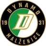
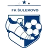
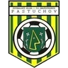
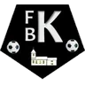
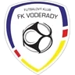
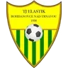

Tabuľka
Sezóna 2026/27. Poradie podľa Sportnetu.
A-mužstvo
TímIV. liga – Majstrovstvá regiónu, 2. miesto
| Poradie | Tím | Z | V | R | P | Skóre | B |
|---|---|---|---|---|---|---|---|
| 1 | FK Spartak Dubnica nad Váhom | 15 | 11 | 2 | 2 | 37:11 | 35 |
| 2 | 15 | 9 | 5 | 1 | 37:15 | 32 | |
| 3 | 15 | 9 | 3 | 3 | 21:11 | 30 | |
| 4 | 15 | 8 | 2 | 5 | 32:28 | 26 | |
| 5 | 15 | 7 | 4 | 4 | 29:19 | 25 | |
| 6 | 15 | 6 | 5 | 4 | 22:16 | 23 | |
| 7 | 15 | 6 | 4 | 5 | 26:24 | 22 | |
| 8 | 15 | 7 | 0 | 8 | 23:20 | 21 | |
| 9 | FC Nitra B | 15 | 5 | 5 | 5 | 23:24 | 20 |
| 10 |  OFK Dynamo Malženice B | 15 | 6 | 1 | 8 | 26:28 | 19 |
| 11 | 15 | 5 | 4 | 6 | 22:19 | 19 | |
| 12 | FC Topoľčany | 15 | 5 | 3 | 7 | 19:26 | 18 |
| 13 | 15 | 5 | 2 | 8 | 19:25 | 17 | |
| 14 | 15 | 3 | 3 | 9 | 12:29 | 12 | |
| 15 | 15 | 2 | 3 | 10 | 18:45 | 9 | |
| 16 | 15 | 3 | 0 | 12 | 20:46 | 9 |
B-mužstvo
TímIX. liga ObFZ Trnava, 5. miesto
| Poradie | Tím | Z | V | R | P | Skóre | B |
|---|---|---|---|---|---|---|---|
| 1 | ŠK Pečeňady | 13 | 9 | 2 | 2 | 46:22 | 29 |
| 2 | 13 | 9 | 1 | 3 | 31:18 | 28 | |
| 3 | 13 | 9 | 0 | 4 | 41:18 | 27 | |
| 4 |  FK Šulekovo | 13 | 8 | 2 | 3 | 50:19 | 26 |
| 5 | 13 | 8 | 1 | 4 | 33:17 | 25 | |
| 6 | 13 | 7 | 3 | 3 | 38:27 | 24 | |
| 7 |  TJ Družstevník Pastuchov | 13 | 6 | 3 | 4 | 31:22 | 21 |
| 8 | 13 | 5 | 2 | 6 | 46:38 | 17 | |
| 9 | 13 | 4 | 3 | 6 | 21:32 | 15 | |
| 10 | 13 | 4 | 1 | 8 | 34:46 | 13 | |
| 11 | FK TJ Družstevník Buková | 13 | 3 | 4 | 6 | 22:40 | 13 |
| 12 | 13 | 3 | 1 | 9 | 18:39 | 10 | |
| 13 | 13 | 2 | 1 | 10 | 26:68 | 7 | |
| 14 | 13 | 1 | 2 | 10 | 24:55 | 5 |
U15 starší žiaci
TímIV. liga starších žiakov ObFZ Trnava, 10. miesto
| Poradie | Tím | Z | V | R | P | Skóre | B |
|---|---|---|---|---|---|---|---|
| 1 |  FK Biely Kostol | 13 | 12 | 1 | 0 | 83:7 | 37 |
| 2 |  FK Voderady | 13 | 10 | 1 | 2 | 63:13 | 31 |
| 3 | OŠK Zavar | 13 | 8 | 1 | 4 | 44:33 | 25 |
| 4 | 13 | 7 | 3 | 3 | 42:10 | 24 | |
| 5 | OŠK Ružindol | 13 | 6 | 0 | 7 | 44:33 | 18 |
| 6 | 13 | 5 | 1 | 7 | 24:37 | 16 | |
| 7 | 13 | 5 | 0 | 8 | 23:29 | 15 | |
| 8 | 13 | 4 | 1 | 8 | 46:50 | 13 | |
| 9 | 13 | 3 | 2 | 8 | 26:41 | 11 | |
| 10 | 13 | 0 | 0 | 13 | 7:149 | 0 |
U13 mladší žiaci
TímIV. liga mladších žiakov ObFZ Trnava, 9. miesto
| Poradie | Tím | Z | V | R | P | Skóre | B |
|---|---|---|---|---|---|---|---|
| 1 | 9 | 8 | 1 | 0 | 59:6 | 25 | |
| 2 | 9 | 7 | 0 | 2 | 43:15 | 21 | |
| 3 | 9 | 6 | 1 | 2 | 43:11 | 19 | |
| 4 | 9 | 6 | 1 | 2 | 39:16 | 19 | |
| 5 | 9 | 4 | 3 | 2 | 40:17 | 15 | |
| 6 | 9 | 4 | 1 | 4 | 30:28 | 13 | |
| 7 | 9 | 2 | 2 | 5 | 13:21 | 8 | |
| 8 | 9 | 2 | 1 | 6 | 14:24 | 7 | |
| 9 | 9 | 1 | 0 | 8 | 12:48 | 3 | |
| 10 | 9 | 0 | 0 | 9 | 4:111 | 0 |
U11 prípravka
TímPrípravka U11 ObFZ Trnava, 9. miesto
| Poradie | Tím | Z | V | R | P | Skóre | B |
|---|---|---|---|---|---|---|---|
| 1 | 11 | 0 | 11 | 0 | 0:0 | 11 | |
| 2 | 11 | 0 | 11 | 0 | 0:0 | 11 | |
| 3 | 11 | 0 | 11 | 0 | 0:0 | 11 | |
| 4 | 11 | 0 | 11 | 0 | 0:0 | 11 | |
| 5 | 11 | 0 | 11 | 0 | 0:0 | 11 | |
| 6 | 11 | 0 | 11 | 0 | 0:0 | 11 | |
| 7 | MTK Leopoldov | 11 | 0 | 11 | 0 | 0:0 | 11 |
| 8 |  TJ Elastik Bohdanovce | 11 | 0 | 11 | 0 | 0:0 | 11 |
| 9 | 11 | 0 | 11 | 0 | 0:0 | 11 | |
| 10 | FK Šulekovo | 11 | 0 | 11 | 0 | 0:0 | 11 |
| 11 | 11 | 0 | 11 | 0 | 0:0 | 11 | |
| 12 | 11 | 0 | 11 | 0 | 0:0 | 11 |
U9 prípravka
TímPrípravka U9 ObFZ Trnava, 9. miesto
| Poradie | Tím | Z | V | R | P | Skóre | B |
|---|---|---|---|---|---|---|---|
| 1 | 10 | 0 | 10 | 0 | 0:0 | 10 | |
| 2 | 10 | 0 | 10 | 0 | 0:0 | 10 | |
| 3 | 10 | 0 | 10 | 0 | 0:0 | 10 | |
| 4 | 10 | 0 | 10 | 0 | 0:0 | 10 | |
| 5 | 10 | 0 | 10 | 0 | 0:0 | 10 | |
| 6 | TJ Elastik Bohdanovce | 10 | 0 | 10 | 0 | 0:0 | 10 |
| 7 | 10 | 0 | 10 | 0 | 0:0 | 10 | |
| 8 | 10 | 0 | 10 | 0 | 0:0 | 10 | |
| 9 | 10 | 0 | 10 | 0 | 0:0 | 10 | |
| 10 | OŠK Ružindol | 10 | 0 | 10 | 0 | 0:0 | 10 |
| 11 | 10 | 0 | 10 | 0 | 0:0 | 10 |